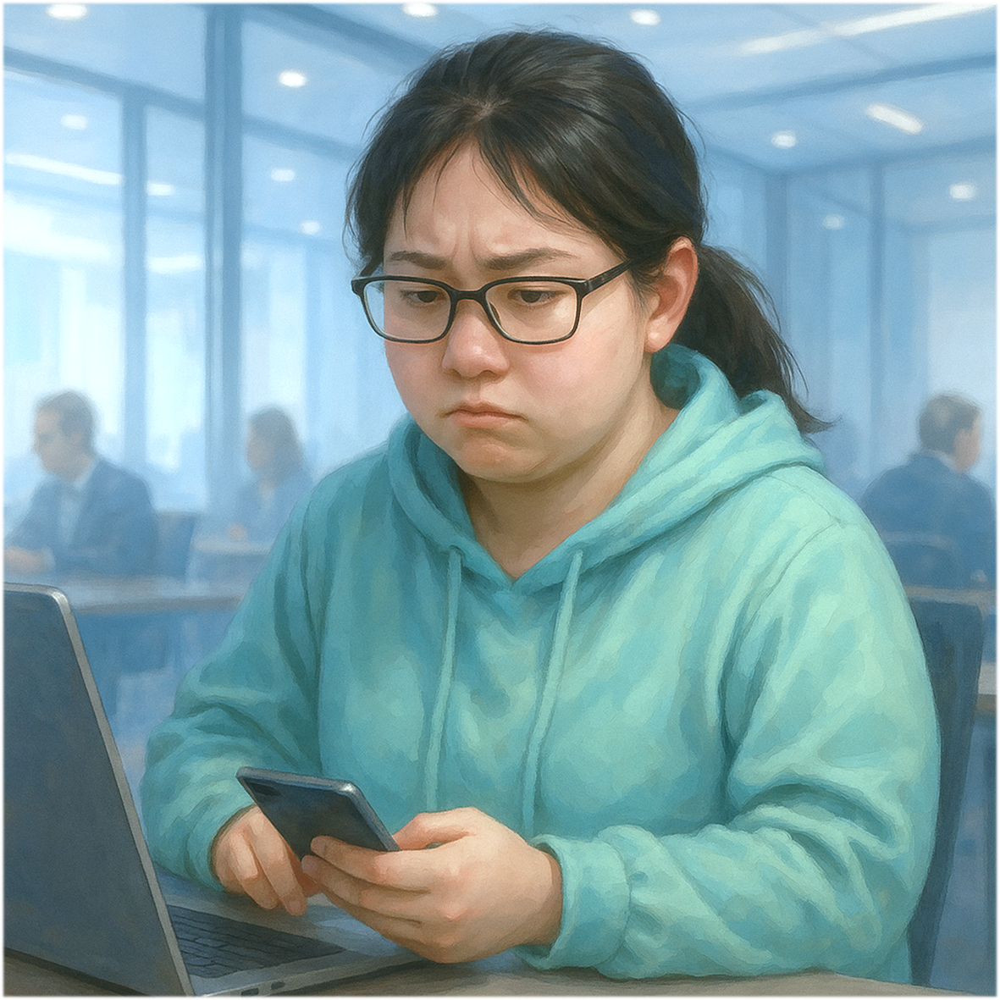

Illustration

Gender
♀️ - 女生
🕵️♂️ - 你不知道我是誰（初始蓋伏）
Goal
對教授說妳非瑞昱不做
Ability
# 慎選實驗室，專案不分系 -
傳遞到你面前的論文被抄襲，翻開角色然後上網發文，網友會同情你兩張手牌。
# 給多少 $ 出多少力 -
發動動作牌沒有直接生效，因為 $ 給不夠，所以抽一張牌。
## 想不開了 -
妳即將肄業，想不開了，但是妳不會，更換研究題目為電子紙或眼動儀，撤銷所有非新研究相關的論文，蓋伏角色退出專案。
Trivia
#AIoT #Master #Year112
Relationship